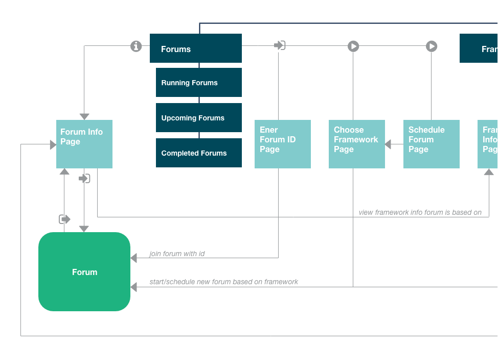

Conteneo
A toolbox for remote teams to engage, innovate and prioritize at scale.

| Client | Duration | Location |
|---|---|---|
| Conteneo | 2 weeks | Sunnyvale, CA |
My Role
I lead the visual, UI and UX design of Weave - a web platform for utilizing powerful frameworks to run, schedule, archive and analyze engaging meetings to solve real business problems.
The Goal
To provide Weave’s users with a fast, intutive way to start, schedule, and find their completed forums and to make the powerful frameworks available on Weave more discoverable.
Discovery
Build a better way for Weave users to find frameworks, run meetings using them, and be able to track the meetings they've run. The goal of the project was the to make Weave easy to use and enjoyable for both newcomers to and veterans of the platform.
The Starting Point
We held an event and invited around a dozen of our more active users to a design jam, where we engaged in different exercises to get their input on what was holding them back in the Project Organizer and what Weave could be.

Brainstorming with Users
We held an event and invited around a dozen of our more active users to a design jam, where we engaged in different exercises to get their input on what was holding them back in the Project Organizer and what Weave could be.
-

Joel critiques -

Bernie explains his card sort. -

Mercedes describing her vision.
Analysis and Planning
Build a better way for Weave users to find frameworks, run meetings using them, and be able to track the meetings they've run. The goal of the project was the to make Weave easy to use and enjoyable for both newcomers to and veterans of the platform.
Storymapping
We held an event and invited around a dozen of our more active users to a design jam, where we engaged in different exercises to get their input on what was holding them back in the Project Organizer and what Weave could be.
-

Joel critiques -

Bernie explains his card sort.
Information Architecture
Addressing issues identified by users and attempting to match their mental model of how the system should be organized, I drafted a diagram of the proposed information architecture of Weave nad created and shared quick prototypes to discuss the interactions and flows.

Wireframes and Prototypes
Addressing issues identified by users and attempting to match their mental model of how the system should be organized, I drafted a diagram of the proposed information architecture of Weave nad created and shared quick prototypes to discuss the interactions and flows.

Solutions
Once the flows were clear across the team, everyone agreed the UI looked good to go, and the first sprint was planned, I joined the team and helped out with the HTML and Sass.
You'll Know What to Do
dsdasddasds
Making Forums Findable
dsdasddasds

Discover a New Framework
dsdasddasds

They Need their Projects
dsdasddasds